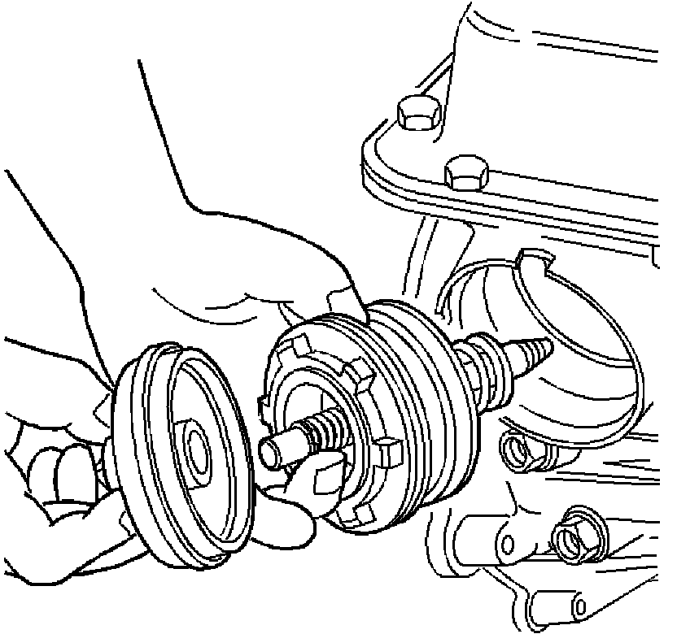
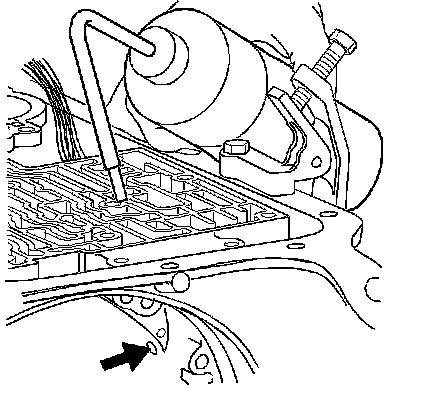

Retainer and Ball Assembly Leak Check
Retainer and Ball Assembly Leak Check
Tools Required
J 29714-A Servo Cover Depressor

1. Install the 2-4 servo into the case.

2. Install oil pan with only four bolts to align pan to case.
3. Use the J 29714-A in order to compress the servo cover.
4. Install the servo cover retaining ring.

5. Remove oil pan.
6. Pour solvent into the accumulator bore until the channel is filled. Watch for leaks in the case channel.
Important: It is normal to see leakage from the small hole next to the larger oval hole.
7. If leakage from the oval shaped hole is observed, replace the third accumulator retainer and ball assembly.